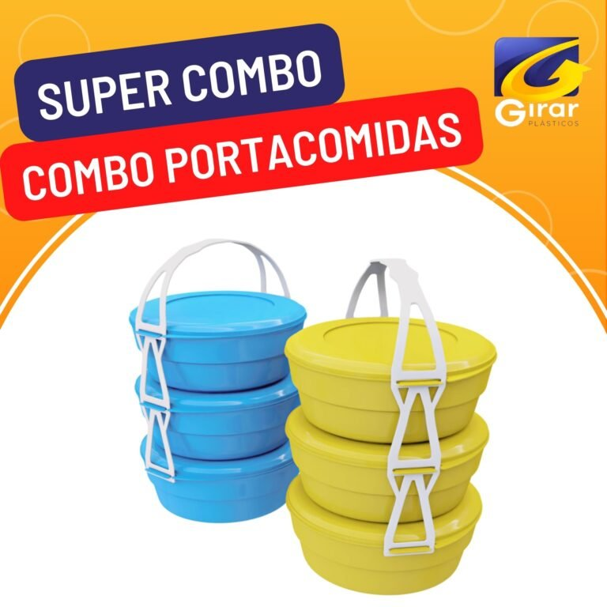
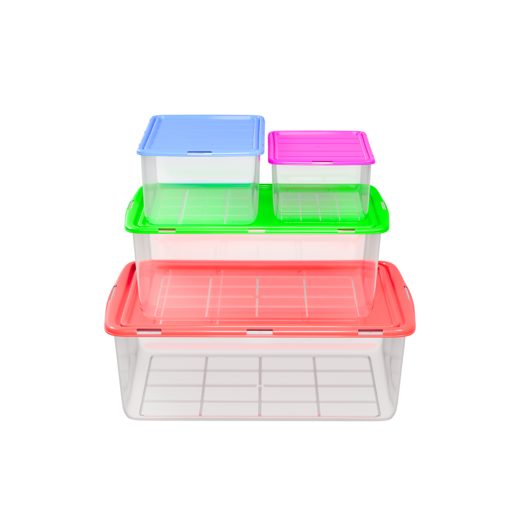

01 / PARA LLEVAREl almuerzo,
El almuerzo,
listo para salir.
Portacomidas y recipientes del catálogo Girar.
Explorar producto oficial ↗DE MEDELLÍN PARA TU NEGOCIO
Organización, cocina y aseo en un portafolio que puedes explorar antes de hablar con un asesor mayorista.
Quiero distribuir Girar ↗Elige tus líneas. Prepara tu selección. Consulta condiciones.

UN PORTAFOLIO PARA DISTINTOS MOMENTOS
Productos de uso diario. Explora las familias y selecciona las que encajen con tu negocio.
TU PRÓXIMA CONVERSACIÓN, MEJOR PREPARADA
Marca las líneas que te interesan. Prepararemos una consulta con referencias reales para el equipo de Girar.
Abre el WhatsApp comercial de Girar con una consulta editable. El pedido, los precios y las condiciones los confirma su asesor.
DE LA PLANTA A TU NEGOCIO
Girar publica su planta de producción y oficinas en Medellín, y un canal específico para distribuidores y compras mayoristas.
Conocer los canales oficiales ↗